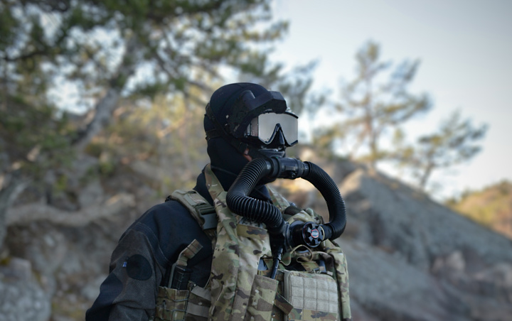

01 / Tactical diving rebreather
Shadow
An underwater life-support system for extended defence diving tasks. Its modular layout supports front mounting or a back-mount kit, with harness options for integrating other equipment.
- System
- Oxygen rebreather
- Mounting
- Front or back-mount kit
- Role
- Extended-duration diving
- Options
- Excursion conversion
Key features
- Equipment-vest clip-on interface options
- Back-mount and standalone harness configurations
- Modular accessories for different requirements